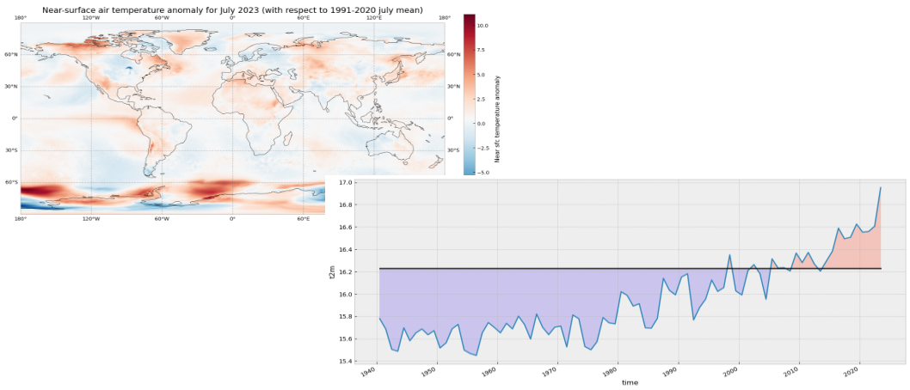

Tutorial on July 2023 record-breaking global surface temperatures using climate data from C3S#
This notebook can be run on free online platforms, such as Binder, Kaggle and Colab, or they can be accessed from GitHub. The links to run this notebook in these environments are provided here, but please note they are not supported by ECMWF.



Learning objectives üéØ#
In this tutorial we will access data from the Climate Data Store (CDS) of the Copernicus Climate Change Service (C3S), and analyse air and sea surface temperatures comparing July 2023 record breaking values with climatologies. We will:
Calculate a global surface temperature climatology
Compute and visualise anomalies with respect to the climatology
View time series and rank global surface temperature records
Analyse North Atlantic sea surface temperature trends
Prepare your environment#
Set up the CDSAPI and your credentials#
The code below will ensure that the cdsapi package is installed. If you have not setup your ~/.cdsapirc file with your credenials, you can replace None with your credentials that can be found on the how to api page (you will need to log in to see your credentials).
!pip install -q cdsapi
# If you have already setup your .cdsapirc file you can leave this as None
cdsapi_key = None
cdsapi_url = None
(Install and) Import libraries#
We will be working with data in NetCDF format. To best handle this data we will use libraries for working with multidimensional arrays, in particular Xarray. We will also need libraries for plotting and viewing data, in this case we will use Matplotlib and Cartopy.
import urllib3
urllib3.disable_warnings()
import os
import numpy as np
import xarray as xr
import matplotlib.pyplot as plt
import cartopy.crs as ccrs
import cdsapi
plt.style.use('bmh')
Specify data directory#
# Directory to store data
# Please ensure that data_dir is a location where you have write permissions
DATADIR = './data_dir/'
# Create this directory if it doesn't exist
os.makedirs(DATADIR, exist_ok=True)
Explore data#
To search for data, visit the CDS website: https://cds.climate.copernicus.eu. Here you can search for ERA5 data using the search bar. The data we need for this tutorial is the ERA5 monthly averaged data on single levels from 1940 to present. ERA5 is the 5th version of the ECMWF Reanalysis dataset. Reanalysis uses a state of the art forecast model and data assimilation system to create a consistent “map without gaps” of observed and modelled climate variables over the past decades.
Search for the data#
Having selected the correct dataset, we now need to specify what product type, variables, temporal and geographic coverage we are interested in. These can all be selected in the “Download data” tab. In this tab a form appears in which we will select the following parameters to download:
Parameters of data to download
Product type:
Monthly averaged reanalysisVariable:
2m temperatureYear:
1940 to present yearMonth:
julyTime:
00:00(default)Geographical area:
Sub-region extractionand leave the default values,'area': [90, -180, -90, 180], # maxlat, minlon, minlat, maxlon(this will be explained further below)Format:
NetCDF

At the end of the download forms, select “Show API request”. This will reveal a block of code, which you can simply copy and paste into a cell of your Jupyter Notebook (see cell below). Having copied the API request into the cell below, running this will retrieve and download the data you requested into your local directory.
Warning
Please remember to accept the terms and conditions of the dataset, at the bottom of the CDS download form!
Download the data#
With the API request copied into the cell below, running this cell will retrieve and download the data you requested into your local directory.
c = cdsapi.Client()
c.retrieve(
'reanalysis-era5-single-levels-monthly-means',
{
'data_format': 'netcdf',
'product_type': 'monthly_averaged_reanalysis',
'variable': '2m_temperature',
'year': [
'1940', '1941', '1942',
'1943', '1944', '1945',
'1946', '1947', '1948',
'1949', '1950', '1951',
'1952', '1953', '1954',
'1955', '1956', '1957',
'1958', '1959', '1960',
'1961', '1962', '1963',
'1964', '1965', '1966',
'1967', '1968', '1969',
'1970', '1971', '1972',
'1973', '1974', '1975',
'1976', '1977', '1978',
'1979', '1980', '1981',
'1982', '1983', '1984',
'1985', '1986', '1987',
'1988', '1989', '1990',
'1991', '1992', '1993',
'1994', '1995', '1996',
'1997', '1998', '1999',
'2000', '2001', '2002',
'2003', '2004', '2005',
'2006', '2007', '2008',
'2009', '2010', '2011',
'2012', '2013', '2014',
'2015', '2016', '2017',
'2018', '2019', '2020',
'2021', '2022', '2023',
],
'month': '07',
'time': '00:00',
'area': [90, -180, -90, 180], # maxlat, minlon, minlat, maxlon
},
f'{DATADIR}t2m_global_july_1940-2023.nc'
)
2025-07-15 10:14:14,343 INFO [2024-09-26T00:00:00] Watch our [Forum](https://forum.ecmwf.int/) for Announcements, news and other discussed topics.
2025-07-15 10:14:14,592 INFO Request ID is d03b586b-7198-451c-a56b-25da8fbd041e
2025-07-15 10:14:14,695 INFO status has been updated to accepted
2025-07-15 10:14:23,417 INFO status has been updated to running
2025-07-15 10:14:28,561 INFO status has been updated to accepted
2025-07-15 10:14:36,230 INFO status has been updated to running
2025-07-15 10:14:47,836 INFO status has been updated to successful
'./data_dir/t2m_global_july_1940-2023.nc'
Inspect data#
Now that we have downloaded the data, we can inspect it. We have requested the data in NetCDF format. This is a commonly used format for array-oriented scientific data. To read and process this data we will make use of the Xarray library. Xarray is an open source project and Python package that makes working with labelled multi-dimensional arrays simple and efficient. We will read the data from our NetCDF file into an xarray.Dataset.
ds = xr.open_dataset(f'{DATADIR}t2m_global_july_1940-2023.nc')
Now we can query our newly created Xarray dataset… Let’s have a look at the ds.
ds
<xarray.Dataset> Size: 349MB
Dimensions: (valid_time: 84, latitude: 721, longitude: 1440)
Coordinates:
number int64 8B ...
* valid_time (valid_time) datetime64[ns] 672B 1940-07-01 ... 2023-07-01
* latitude (latitude) float64 6kB 90.0 89.75 89.5 ... -89.5 -89.75 -90.0
* longitude (longitude) float64 12kB -180.0 -179.8 -179.5 ... 179.5 179.8
expver (valid_time) <U4 1kB ...
Data variables:
t2m (valid_time, latitude, longitude) float32 349MB ...
Attributes:
GRIB_centre: ecmf
GRIB_centreDescription: European Centre for Medium-Range Weather Forecasts
GRIB_subCentre: 0
Conventions: CF-1.7
institution: European Centre for Medium-Range Weather Forecasts
history: 2025-07-15T08:14 GRIB to CDM+CF via cfgrib-0.9.1...We see that the dataset has one variable called t2m, which stands for “2 metre temperature”, and three coordinates of longitude, latitude and time.
Before we have commented to choose the sub-region extraction option but selecting the whole region in the request to the CDSAPI, 'area': [90, -180, -90, 180], # maxlat, minlon, minlat, maxlon. If we had chosen the whole available region option then the longitudes in the Xarray Dataset would be on a [0, 360] grid instead of [-180, 180] and we should correct this performing some extra steps.
If your longitudes are on a [0, 360] grid you could do the following to bring the longitude coordinates to a [-180, 180] grid:
ds_180 = ds.assign_coords(
longitude=(((ds.longitude + 180) % 360) - 180)
).sortby('longitude')
There is also an expver coordinate. More on this later.
Select the icons to the right of the table above to expand the attributes of the coordinates and data variables. What are the units of the temperature data?
While an Xarray dataset may contain multiple variables, an Xarray data array holds a single multi-dimensional variable and its coordinates. To make the processing of the t2m data easier, we convert it into an Xarray data array. We will call it da_tmp (a temporary data array) because we will transform the data in some ways.
da_tmp = ds['t2m']
Let’s view this data:
da_tmp
<xarray.DataArray 't2m' (valid_time: 84, latitude: 721, longitude: 1440)> Size: 349MB
[87212160 values with dtype=float32]
Coordinates:
number int64 8B ...
* valid_time (valid_time) datetime64[ns] 672B 1940-07-01 ... 2023-07-01
* latitude (latitude) float64 6kB 90.0 89.75 89.5 ... -89.5 -89.75 -90.0
* longitude (longitude) float64 12kB -180.0 -179.8 -179.5 ... 179.5 179.8
expver (valid_time) <U4 1kB ...
Attributes: (12/32)
GRIB_paramId: 167
GRIB_dataType: an
GRIB_numberOfPoints: 1038240
GRIB_typeOfLevel: surface
GRIB_stepUnits: 1
GRIB_stepType: avgua
... ...
GRIB_totalNumber: 0
GRIB_units: K
long_name: 2 metre temperature
units: K
standard_name: unknown
GRIB_surface: 0.0From the result of the cell above you can see that now we have a xarray.DataArray.
Change temperature units from Kelvin to Celsius#
Notice that the ERA5 temperature data are in units of Kelvin, the base unit for temperature in the International System of Units (SI). If you want to convert the values from Kelvin to degrees Celsius, you have to subtract 273.15.
# Subtract 273.15 to convert to Celsius
da_celsius = da_tmp - 273.15
# Update the attributes of the DataArray to add Celsius units
da_celsius = da_celsius.assign_attrs(da_tmp.attrs)
da_celsius.attrs['units'] = '°C'
Data to be used#
The da_celsius data array will be used in the rest of the surface temperature exercise. Let’s check what we have:
da_celsius
<xarray.DataArray 't2m' (valid_time: 84, latitude: 721, longitude: 1440)> Size: 349MB
array([[[ 0.85317993, 0.85317993, 0.85317993, ..., 0.85317993,
0.85317993, 0.85317993],
[ 0.8590393 , 0.8590393 , 0.8590393 , ..., 0.8590393 ,
0.8590393 , 0.8590393 ],
[ 0.85317993, 0.85317993, 0.85317993, ..., 0.85317993,
0.85317993, 0.85317993],
...,
[-55.322586 , -55.320633 , -55.320633 , ..., -55.326492 ,
-55.326492 , -55.32454 ],
[-55.234695 , -55.234695 , -55.232742 , ..., -55.23665 ,
-55.23665 , -55.234695 ],
[-54.98079 , -54.98079 , -54.98079 , ..., -54.98079 ,
-54.98079 , -54.98079 ]],
[[ 0.898468 , 0.898468 , 0.898468 , ..., 0.898468 ,
0.898468 , 0.898468 ],
[ 0.89456177, 0.89456177, 0.89456177, ..., 0.89456177,
0.89456177, 0.89456177],
[ 0.8808899 , 0.8808899 , 0.8808899 , ..., 0.882843 ,
0.8808899 , 0.8808899 ],
...
-56.495087 , -56.49118 ],
[-56.72751 , -56.725555 , -56.723602 , ..., -56.733368 ,
-56.731415 , -56.72946 ],
[-56.506805 , -56.506805 , -56.506805 , ..., -56.506805 ,
-56.506805 , -56.506805 ]],
[[ 0.7371521 , 0.7371521 , 0.7371521 , ..., 0.7371521 ,
0.7371521 , 0.7371521 ],
[ 0.7312927 , 0.7312927 , 0.7312927 , ..., 0.7312927 ,
0.7312927 , 0.7312927 ],
[ 0.7215271 , 0.7215271 , 0.7215271 , ..., 0.7215271 ,
0.7215271 , 0.7215271 ],
...,
[-53.130035 , -53.12613 , -53.122223 , ..., -53.1398 ,
-53.135895 , -53.13199 ],
[-53.23941 , -53.237457 , -53.235504 , ..., -53.243317 ,
-53.243317 , -53.241364 ],
[-53.294098 , -53.294098 , -53.294098 , ..., -53.294098 ,
-53.294098 , -53.294098 ]]],
shape=(84, 721, 1440), dtype=float32)
Coordinates:
number int64 8B ...
* valid_time (valid_time) datetime64[ns] 672B 1940-07-01 ... 2023-07-01
* latitude (latitude) float64 6kB 90.0 89.75 89.5 ... -89.5 -89.75 -90.0
* longitude (longitude) float64 12kB -180.0 -179.8 -179.5 ... 179.5 179.8
expver (valid_time) <U4 1kB ...
Attributes: (12/32)
GRIB_paramId: 167
GRIB_dataType: an
GRIB_numberOfPoints: 1038240
GRIB_typeOfLevel: surface
GRIB_stepUnits: 1
GRIB_stepType: avgua
... ...
GRIB_totalNumber: 0
GRIB_units: K
long_name: 2 metre temperature
units: °C
standard_name: unknown
GRIB_surface: 0.0Now we can see the updated values in Celsius and the units attribute updated accordingly.
Plotting one timestep#
Just to check what we have so far, let’s plot a map of 2m temperature for the first (July 1940) and the last (July 2023) timesteps. We will plot these maps using the convenience method plot available for xarray.DataArray. This allows the creation of simple plots using one line of code. Also, with the xarray method sel(), you can select a data array based on coordinate labels.
da_celsius.sel(valid_time='1940').plot()
<matplotlib.collections.QuadMesh at 0x148623050>

da_celsius.sel(valid_time='2023').plot()
<matplotlib.collections.QuadMesh at 0x15b026900>

Calculate a surface temperature climatology: reference period 1991-2020#
Standard reference periods and climatologies#
Anthropogenic activities and natural variations from years to decades shape the Earth’s climate. In order to evaluate anomalous conditions for a specific month or year, the World Meteorological Organization (WMO) defines standard reference periods used to create climatologies, also known as climate normals. Climatologies can be considered as the typical climate for the period they are based on.
Until 2020, the most current and widely used standard reference period was the 30-year range of 1981-2010. With the start of 2021, the WMO recommended updating the climate normal reference period to the range 1991-2020.
First, let us calculate the temperature climatology for July during the reference period 1991-2020. For this, we will select the reference period and then average along the time dimension. The resulting object contains the average July mean surface air temperature on each grid point.
t2m_ref_per = da_celsius.sel(valid_time=slice('1991-01-01', '2020-12-31')).mean(dim='valid_time')
If we have a look at this data object we will see now we have only two coordinates, latitude and longitude.
t2m_ref_per
<xarray.DataArray 't2m' (latitude: 721, longitude: 1440)> Size: 4MB
array([[ 0.7482117 , 0.7482117 , 0.7482117 , ..., 0.7482117 ,
0.7482117 , 0.7482117 ],
[ 0.7403341 , 0.7403992 , 0.74046427, ..., 0.7397481 ,
0.74000853, 0.74020386],
[ 0.72770387, 0.72783405, 0.7280294 , ..., 0.726532 ,
0.72692263, 0.7273783 ],
...,
[-55.417484 , -55.414036 , -55.410713 , ..., -55.427708 ,
-55.42432 , -55.42087 ],
[-55.408566 , -55.406937 , -55.405376 , ..., -55.413837 ,
-55.412014 , -55.41039 ],
[-55.04561 , -55.04561 , -55.04561 , ..., -55.04561 ,
-55.04561 , -55.04561 ]], shape=(721, 1440), dtype=float32)
Coordinates:
number int64 8B ...
* latitude (latitude) float64 6kB 90.0 89.75 89.5 ... -89.5 -89.75 -90.0
* longitude (longitude) float64 12kB -180.0 -179.8 -179.5 ... 179.5 179.8We can also make a quick plot to have an exploratory view of this new xarray.DataArray:
t2m_ref_per.plot()
<matplotlib.collections.QuadMesh at 0x16a0a8680>

Visualise surface temperature anomalies#
The next step is now to calculate the anomaly for July 2023 with respect to the climatology (1991-2020). The term anomaly refers to the deviation of a value from the long-term average. Positive or negative anomalies indicate that the average temperatures of a particular month were respectively warmer or cooler than the reference value for the same month.
Let us calculate the temperature anomaly for the year 2023. In a first step, we select the average near-surface temperature values for the year 2023 from the xarray.DataArray object da_celsius. As commented before, with the xarray method sel(), you can select a data array based on coordinate labels. The coordinate label of interest is year='2023'. As we are not doing, for instance, an aggregation operation like the mean over a dimension we will have the time dimension in the resulting data array. To remove the time dimension we can use the squeeze method.
t2m_july2023 = da_celsius.sel(valid_time='2023')
t2m_july2023
<xarray.DataArray 't2m' (valid_time: 1, latitude: 721, longitude: 1440)> Size: 4MB
array([[[ 0.7371521, 0.7371521, 0.7371521, ..., 0.7371521,
0.7371521, 0.7371521],
[ 0.7312927, 0.7312927, 0.7312927, ..., 0.7312927,
0.7312927, 0.7312927],
[ 0.7215271, 0.7215271, 0.7215271, ..., 0.7215271,
0.7215271, 0.7215271],
...,
[-53.130035 , -53.12613 , -53.122223 , ..., -53.1398 ,
-53.135895 , -53.13199 ],
[-53.23941 , -53.237457 , -53.235504 , ..., -53.243317 ,
-53.243317 , -53.241364 ],
[-53.294098 , -53.294098 , -53.294098 , ..., -53.294098 ,
-53.294098 , -53.294098 ]]], shape=(1, 721, 1440), dtype=float32)
Coordinates:
number int64 8B ...
* valid_time (valid_time) datetime64[ns] 8B 2023-07-01
* latitude (latitude) float64 6kB 90.0 89.75 89.5 ... -89.5 -89.75 -90.0
* longitude (longitude) float64 12kB -180.0 -179.8 -179.5 ... 179.5 179.8
expver (valid_time) <U4 16B ...
Attributes: (12/32)
GRIB_paramId: 167
GRIB_dataType: an
GRIB_numberOfPoints: 1038240
GRIB_typeOfLevel: surface
GRIB_stepUnits: 1
GRIB_stepType: avgua
... ...
GRIB_totalNumber: 0
GRIB_units: K
long_name: 2 metre temperature
units: °C
standard_name: unknown
GRIB_surface: 0.0t2m_july2023 = t2m_july2023.squeeze('valid_time')
t2m_july2023
<xarray.DataArray 't2m' (latitude: 721, longitude: 1440)> Size: 4MB
array([[ 0.7371521, 0.7371521, 0.7371521, ..., 0.7371521,
0.7371521, 0.7371521],
[ 0.7312927, 0.7312927, 0.7312927, ..., 0.7312927,
0.7312927, 0.7312927],
[ 0.7215271, 0.7215271, 0.7215271, ..., 0.7215271,
0.7215271, 0.7215271],
...,
[-53.130035 , -53.12613 , -53.122223 , ..., -53.1398 ,
-53.135895 , -53.13199 ],
[-53.23941 , -53.237457 , -53.235504 , ..., -53.243317 ,
-53.243317 , -53.241364 ],
[-53.294098 , -53.294098 , -53.294098 , ..., -53.294098 ,
-53.294098 , -53.294098 ]], shape=(721, 1440), dtype=float32)
Coordinates:
number int64 8B ...
valid_time datetime64[ns] 8B 2023-07-01
* latitude (latitude) float64 6kB 90.0 89.75 89.5 ... -89.5 -89.75 -90.0
* longitude (longitude) float64 12kB -180.0 -179.8 -179.5 ... 179.5 179.8
expver <U4 16B ...
Attributes: (12/32)
GRIB_paramId: 167
GRIB_dataType: an
GRIB_numberOfPoints: 1038240
GRIB_typeOfLevel: surface
GRIB_stepUnits: 1
GRIB_stepType: avgua
... ...
GRIB_totalNumber: 0
GRIB_units: K
long_name: 2 metre temperature
units: °C
standard_name: unknown
GRIB_surface: 0.0The anomaly will be the difference between t2m_july2023 and t2m_ref_per. A positive value means July 2023 is above the expected mean:
anom = t2m_july2023 - t2m_ref_per
The previous operation results in the anomaly on each longitude and latitude location stored in the anom data array. We can plot this in a map to check where the anomaly was positive (July 2023 warmer than the climatology) or negative (July 2023 colder than the climatology). This time we will create the plot using the matplotlib and cartopy libraries.
The code below is briefly commented in the code cell. The key part is plt.pcolormesh, which is used to plot the 2D data array on each (longitude, latitude) grid cell. The colours are defined using the RdBr_r colormap in a range between -12 and 12 (ºC). This is a diverging colormap that goes from red to blue but in reverse order, this is why it has the _r suffix. So, in this specific case, -12 degrees is shown in dark blue, 12 in dark red and 0, equal to the climate normal, in white.
# create the figure panel and the map using the Cartopy PlateCarree projection
fig, ax = plt.subplots(1, 1, figsize = (16, 8), subplot_kw={'projection': ccrs.PlateCarree()})
# Plot the data
im = plt.pcolormesh(
anom.longitude,
anom.latitude,
anom,
cmap='RdBu_r',
vmin=-12,
vmax=12
)
# Set the figure title, add lat/lon grid and coastlines
ax.set_title('Temperature anomaly for July 2023 (with respect to 1991-2020 July mean)', fontsize=16)
ax.gridlines(
draw_labels=True,
linewidth=1,
color='gray',
alpha=0.5,
linestyle='--'
)
ax.coastlines(color='black')
# Specify the colorbar and set a label for the colorbar
cbar = plt.colorbar(im, fraction=0.05, pad=0.04)
cbar.set_label('Temperature anomaly')
# Show or save the figure, uncomment the line/s in case of need
#fig.show() # not needed in a notebook inline context
#fig.savefig('near_sfc_t2m_anomaly_july2023.png') # not needed in a notebook inline context

View time series and analyse surface temperature trends#
Now let us view the time series from 1940 to 2023 averaged over the entire region. To do this we need to average da_celsius over the latitude and longitude dimensions. A very important consideration however is that the gridded data cells do not all correspond to the same areas. The size covered by each data point on the model grid varies as a function of latitude. We need to take this into account when calculating spatial averages.
One way to do this is to use the cosine of the latitude as a proxy for the varying sizes.
Another way would be to use cdo that would take into account the varying cell area. The command to do this is cdo fldmean in.nc out.nc.
In order to keep things simple we will stick to the solution using xarray.
First we calculate the weights by using the cosine of the latitude (in radians), then we apply these weights to the data array with the xarray method weighted().
weights = np.cos(np.deg2rad(da_celsius.latitude))
weights.name = "weights"
da_celsius_weighted = da_celsius.weighted(weights)
Then we calculate the weighted mean so we will have a time series with the spatially averaged July t2m from 1940 to 2023.
t2m_global = da_celsius_weighted.mean(["longitude", "latitude"])
Let’s look at the new data array:
t2m_global
<xarray.DataArray 't2m' (valid_time: 84)> Size: 672B
array([15.77944134, 15.68620715, 15.50451569, 15.48716511, 15.69700522,
15.58132919, 15.65149032, 15.68705624, 15.63438369, 15.67172358,
15.51662268, 15.56192631, 15.68824825, 15.72781826, 15.49778106,
15.46653342, 15.4491943 , 15.65261151, 15.74385955, 15.70026759,
15.65211903, 15.7370714 , 15.68776148, 15.80164802, 15.72590586,
15.59623776, 15.82068347, 15.70151791, 15.63563469, 15.70298426,
15.71303478, 15.52586028, 15.81258276, 15.7778222 , 15.52932399,
15.50037555, 15.57268697, 15.789472 , 15.74125733, 15.73199896,
16.02019316, 15.98798049, 15.89153454, 15.91304376, 15.69771985,
15.69392959, 15.78107717, 16.14044935, 16.03236312, 15.99193291,
16.15157001, 16.18179695, 15.767838 , 15.87908026, 15.95437756,
16.12509654, 16.02258372, 16.05694355, 16.35076069, 16.02704447,
15.99123957, 16.20850865, 16.26295181, 16.18176182, 15.95315449,
16.31432207, 16.23229984, 16.23531856, 16.205525 , 16.36665523,
16.280928 , 16.37203418, 16.26923834, 16.20393046, 16.29469434,
16.38262507, 16.58947245, 16.49455379, 16.50727328, 16.62583005,
16.5542178 , 16.55974187, 16.60631455, 16.95316422])
Coordinates:
number int64 8B 0
* valid_time (valid_time) datetime64[ns] 672B 1940-07-01 ... 2023-07-01
expver (valid_time) <U4 1kB '0001' '0001' '0001' ... '0001' '0001'We will calculate the climatology for this global spatially averaged July t2m. This value will be used later to check which years have global average 2m temperature above or below the climatology.
t2m_global_ref_per = t2m_global.sel(valid_time=slice('1991-01-01', '2020-12-31')).mean(dim='valid_time')
print(f'{t2m_global_ref_per.values:.2f} \N{DEGREE SIGN}C')
16.23 °C
We will create a constant array with the climatology value that has the same length as the time series:
t2m_clim = t2m_global_ref_per.mean().values
Let’s plot the mean value since 1940. The values below the climatology will be highlighted in light blue while the values above the climatology will be highlighted in red. Code is commented in the code cell below.
# create the figure panel and the axes
fig, ax = plt.subplots(figsize=(16, 6))
# we use the xarray plot method passing the axes we want to use
# to plot the global time series from 1940 to 2023
t2m_global.plot(ax=ax)
# we use the t2m_clim variable to plot a horizontal line
# with the global climate normal value (1991-2020)
ax.axhline(y=t2m_clim, xmin = 0.05, xmax = 0.95, color='black')
# In order to highlight years above or below the global climate value
# we use two times the fill_between method that fills the area between two lines
# The first one is for values below the global climate normal in 'mediumslateblue' color
ax.fill_between(
t2m_global.valid_time,
t2m_global,
t2m_clim,
where=(t2m_global < t2m_clim),
color='mediumslateblue',
alpha=0.3,
interpolate=True
)
# The second one is for values above the global climate normal in 'tomato' color
ax.fill_between(
t2m_global.valid_time,
t2m_global,
t2m_clim,
where=(t2m_global > t2m_clim),
color='tomato',
alpha=0.3,
interpolate=True
)
# Show or save the figure, uncomment the line/s in case of need
#fig.show() # not needed in a notebook inline context
#fig.savefig('near_sfc_t2m_global_avg_july.png') # not needed in a notebook inline context
<matplotlib.collections.FillBetweenPolyCollection at 0x16c0f5820>

Could you try a similar figure but using the anomalies (“monthly value” - “1991-2020 climatological value”) instead of the spatially aggregated average monthly values?
# Your code here
Now let’s order the months from colder to warmer.
t2m_global_sorted = t2m_global.sortby(t2m_global)
Let’s have a look to the result and check if it is sorted.
t2m_global_sorted
<xarray.DataArray 't2m' (valid_time: 84)> Size: 672B
array([15.4491943 , 15.46653342, 15.48716511, 15.49778106, 15.50037555,
15.50451569, 15.51662268, 15.52586028, 15.52932399, 15.56192631,
15.57268697, 15.58132919, 15.59623776, 15.63438369, 15.63563469,
15.65149032, 15.65211903, 15.65261151, 15.67172358, 15.68620715,
15.68705624, 15.68776148, 15.68824825, 15.69392959, 15.69700522,
15.69771985, 15.70026759, 15.70151791, 15.70298426, 15.71303478,
15.72590586, 15.72781826, 15.73199896, 15.7370714 , 15.74125733,
15.74385955, 15.767838 , 15.7778222 , 15.77944134, 15.78107717,
15.789472 , 15.80164802, 15.81258276, 15.82068347, 15.87908026,
15.89153454, 15.91304376, 15.95315449, 15.95437756, 15.98798049,
15.99123957, 15.99193291, 16.02019316, 16.02258372, 16.02704447,
16.03236312, 16.05694355, 16.12509654, 16.14044935, 16.15157001,
16.18176182, 16.18179695, 16.20393046, 16.205525 , 16.20850865,
16.23229984, 16.23531856, 16.26295181, 16.26923834, 16.280928 ,
16.29469434, 16.31432207, 16.35076069, 16.36665523, 16.37203418,
16.38262507, 16.49455379, 16.50727328, 16.5542178 , 16.55974187,
16.58947245, 16.60631455, 16.62583005, 16.95316422])
Coordinates:
number int64 8B 0
* valid_time (valid_time) datetime64[ns] 672B 1956-07-01 ... 2023-07-01
expver (valid_time) <U4 1kB '0001' '0001' '0001' ... '0001' '0001'If we plot the ranking from colder to warmer including also the climate normal we’ll see the following. As before, code is commented in the code cell below:
# create the figure panel and the axes
fig, ax = plt.subplots(figsize=(16, 6))
# We create a label for the 'x' axis using each year
xlabel = t2m_global_sorted.valid_time.values.astype('datetime64[Y]').astype(int) + 1970 # years
# We create also the location for each of the labels in the 'x' axis
xpos = np.arange(len(xlabel))
# We extract the sorted values to be used as the 'y' values
y = t2m_global_sorted.values
# We create a bar plot of all the bars using 'tomato' color
ax.bar(xpos, y, color='tomato')
# We place all the labels for the 'x' axis rotated 90º
ax.set_xticks(xpos, xlabel, rotation=90)
# Now we create a mask with the values below the climate normal
mask = y < t2m_clim
# and plot again those values below the climate normal but now using the 'mediumslateblue' color
ax.bar(xpos[mask], y[mask], color='mediumslateblue')
# We limit the range of the 'y' axis to the (minimum - 0.25) and the (maximum + 0.25)
ax.set_ylim(t2m_global_sorted.min() - 0.25, t2m_global_sorted.max() + 0.25)
# we add a horizontal line to plot the climate normal.
#ax.plot(range(len(clim_repeated)), clim_repeated, '-.', linewidth=0.5, color='black')
ax.axhline(y=t2m_clim, xmin = 0.05, xmax = 0.95, color='black')
# This function is very interesting as it does magic to prettify the final result :-)
# https://matplotlib.org/stable/api/_as_gen/matplotlib.pyplot.tight_layout.html
fig.tight_layout()
# Show or save the figure, uncomment the line/s in case of need
#fig.show() # not needed in a notebook inline context
#fig.savefig('near_sfc_t2m_global_avg_july_sorted_barplot.png') # not needed in a notebook inline context

View time series and analyse North Atlantic sea surface temperature trends#
This is a new exercise. In this part of the tutorial we will be working with monthly sea surface temperature (SST) data.#
First we need to download a new dataset. As before, we need to specify what product type, variables, temporal and geographic coverage we are interested in. These can all be selected in the “Download data” tab in the CDS (https://cds.climate.copernicus.eu). In this tab a form appears in which we select the following parameters to download:
Parameters of data to download
Product type:
Monthly averaged reanalysisVariable:
sea_surface_temperatureYear:
1991 to 2023Month:
allTime:
00:00(default)Geographical area:
60, -40, 0, 0Format:
NetCDF
Below you can see the API request:
c.retrieve(
'reanalysis-era5-single-levels-monthly-means',
{
'data_format': 'netcdf',
'variable': 'sea_surface_temperature',
'product_type': 'monthly_averaged_reanalysis',
'year': [
'1991', '1992', '1993',
'1994', '1995', '1996',
'1997', '1998', '1999',
'2000', '2001', '2002',
'2003', '2004', '2005',
'2006', '2007', '2008',
'2009', '2010', '2011',
'2012', '2013', '2014',
'2015', '2016', '2017',
'2018', '2019', '2020',
'2021', '2022', '2023',
],
'month': [
'01', '02', '03',
'04', '05', '06',
'07', '08', '09',
'10', '11', '12',
],
'time': '00:00',
'area': [
60, -40, 0,
0,
],
},
f'{DATADIR}sst_(NAtl)_monthly_1991-2023.nc'
)
2025-07-15 10:20:45,130 INFO Request ID is 367ce9dc-1d8b-402c-8185-4c485b849b4a
2025-07-15 10:20:45,588 INFO status has been updated to accepted
2025-07-15 10:20:54,421 INFO status has been updated to running
2025-07-15 10:21:36,540 INFO status has been updated to successful
'./data_dir/sst_(NAtl)_monthly_1991-2023.nc'
Let’s do some work with this new dataset. First of all, let’s read it.
sst_ds = xr.open_dataset(f'{DATADIR}sst_(NAtl)_monthly_1991-2023.nc')
Now we can have a look at the dataset:
sst_ds
<xarray.Dataset> Size: 61MB
Dimensions: (valid_time: 396, latitude: 241, longitude: 161)
Coordinates:
number int64 8B ...
* valid_time (valid_time) datetime64[ns] 3kB 1991-01-01 ... 2023-12-01
* latitude (latitude) float64 2kB 60.0 59.75 59.5 59.25 ... 0.5 0.25 0.0
* longitude (longitude) float64 1kB -40.0 -39.75 -39.5 ... -0.5 -0.25 0.0
expver (valid_time) <U4 6kB ...
Data variables:
sst (valid_time, latitude, longitude) float32 61MB ...
Attributes:
GRIB_centre: ecmf
GRIB_centreDescription: European Centre for Medium-Range Weather Forecasts
GRIB_subCentre: 0
Conventions: CF-1.7
institution: European Centre for Medium-Range Weather Forecasts
history: 2025-07-15T08:21 GRIB to CDM+CF via cfgrib-0.9.1...As before, we see there are four dimensions and units are in Kelvin. We will work with data in degrees Celsius:
# convert to ºC
sst = sst_ds['sst'] - 273.15
We can have a quick look at the data using the convenient plot method:
sst.sel(valid_time='1991/01').plot()
<matplotlib.collections.QuadMesh at 0x33c283050>

In the plot above we can see many values are below 0, those located on land. Actually, in the original sst_ds xarray.Dataset the land positions had a value of numpy.nan. Now, for sst_expver this is not true. This is a result of the previous operation using numpy.nansum and subtracting 273.15. After this operation the land locations have a value of -273.15 which is not valid. Let’s amend this using a mask:
# add a mask for LAND
mask = sst.values > -273.15
sst_masked = sst.where(mask)
Again, as before, we weight the dataset by the area:
# Add weights for area
weights = np.cos(np.deg2rad(sst_masked.latitude))
weights.name = "weights"
sst_weights = sst_masked.weighted(weights)
And, also, we calculate the spatially averaged value for each month to get a monthly time series of the average temperature of the sst over the main area of the North Atlantic from January 1991 to July 2023:
# Aggregate on Lon/Lat to get a time series of the area
sst_ts = sst_weights.mean(["longitude", "latitude"])
sst_ts.plot(figsize=(16, 6))
[<matplotlib.lines.Line2D at 0x33c8b9e80>]

In the plot above we can see the monthly evolution since 1991.
We calculate the minimum, the maximum and the average value for each of the 12 months of the year during the climatological reference (1991-2020):
# Min value on each month during the climatology period
min_per_month_clim = sst_ts.sel(
valid_time=slice('1991-01-01', '2020-12-31')
).groupby('valid_time.month').min()
# Max value on each month during the climatology period
max_per_month_clim = sst_ts.sel(
valid_time=slice('1991-01-01', '2020-12-31')
).groupby('valid_time.month').max()
# avg value on each month during the climatology period
avg_per_month_clim = sst_ts.sel(
valid_time=slice('1991-01-01', '2020-12-31')
).groupby('valid_time.month').mean()
And once we have this we can compare how recent SST values compare with those of previous years and to the climatology.
In the figure below we will plot the monthly time series for the following:
Each year for the period from 1991 to 2020 (light gray).
The 1991-2020 average (thick gray line).
2022 (thick orange line).
2023 (January to July, thick black line).
fig, ax = plt.subplots(figsize=(16, 6))
ax.set_facecolor('white') # For this plot we want a white axes background
# Thin line for each year from 1991 to 2020
for year in range(1991, 2021):
ax.plot(range(1, 13), sst_ts.sel(valid_time=str(year)), color='lightgrey', lw=0.5)
# Climatological average
ax.plot(range(1, 13), avg_per_month_clim, '--', color='grey', lw=3, label='Clim')
# Monthly average for 2022
ax.plot(range(1, 13), sst_ts.sel(valid_time='2022'), color='orange', lw=3, label='2022')
# Monthly average for 2023
ax.plot(range(1, 13), sst_ts.sel(valid_time='2023'), color='black', lw=5, label='2023')
# Customise the plot
ax.set_xlabel('month')
ax.set_ylabel('SST ($\degree$C)')
ax.legend(loc='upper left')
fig.tight_layout()
# Show or save the figure, uncomment the line/s in case of need
#fig.show() # not needed in a notebook inline context
#fig.savefig('SST_NorthAtlantic_avg.png') # not needed in a notebook inline context
<>:20: SyntaxWarning: invalid escape sequence '\d'
<>:20: SyntaxWarning: invalid escape sequence '\d'
/var/folders/kx/ksg5wbrj1sq95rp2tz_72j6c0000gn/T/ipykernel_2529/2791732523.py:20: SyntaxWarning: invalid escape sequence '\d'
ax.set_ylabel('SST ($\degree$C)')

Notice the dramatic increase in SST over the North Atlantic in 2023 compared to previous years!